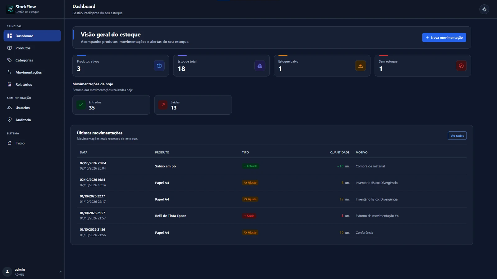

↗ Projeto Full Stack
Sistema Web / Gestão de Estoque
StockFlow
Sistema web para gerenciamento de estoque, desenvolvido com Python e Flask, com controle de produtos, movimentações, usuários, permissões, auditoria e indicadores de estoque.
- Produtos, estoque mínimo e dashboard
- Entradas, saídas, ajustes e estornos
- Autenticação, permissões e auditoria
- Inventário físico e relatórios com filtros